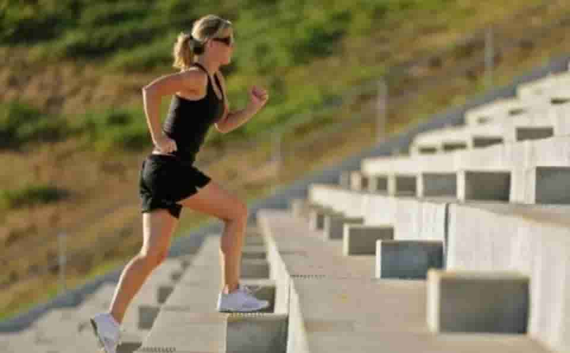
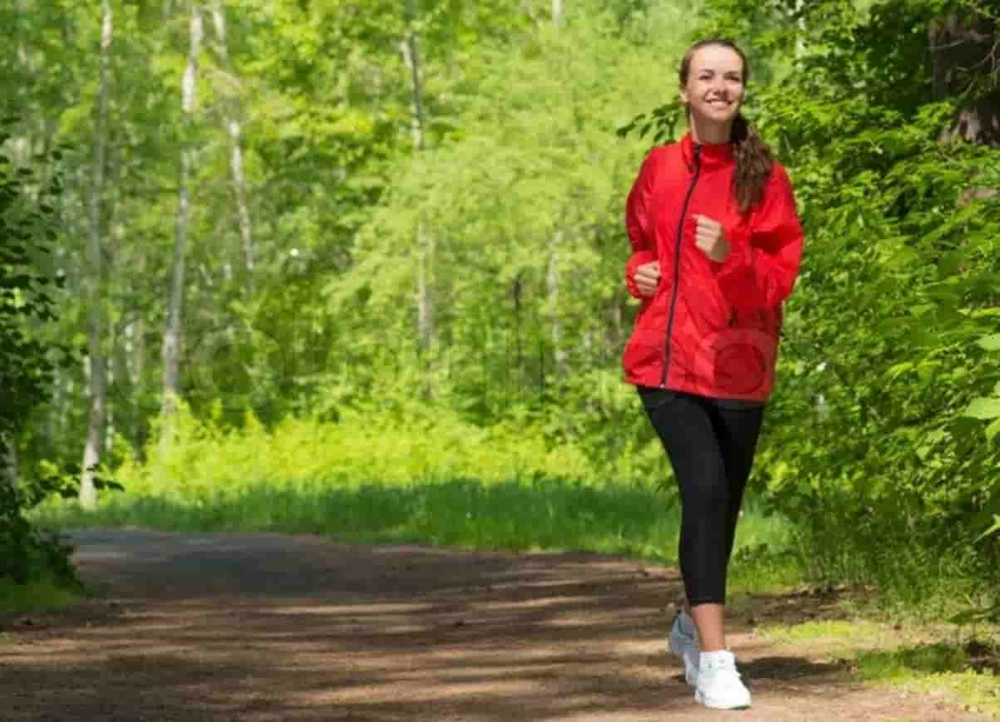
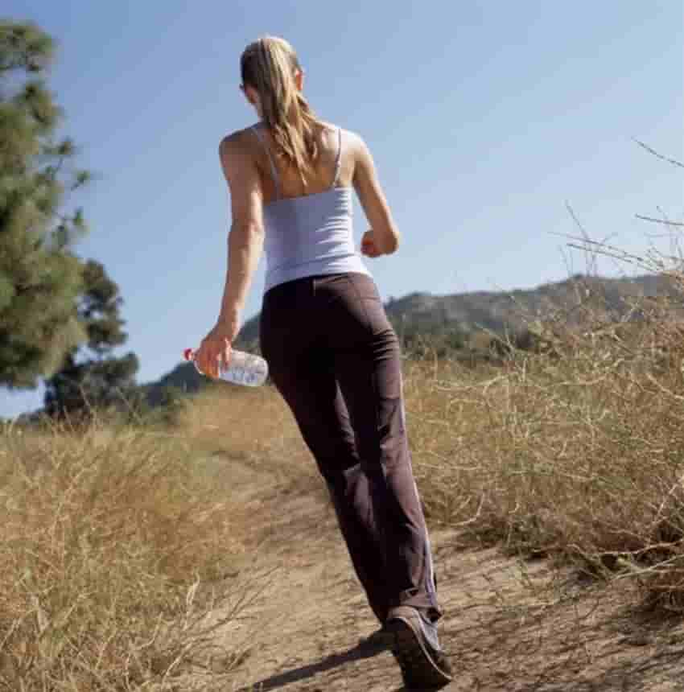

На вопрос, помогает ли ходьба похудеть, ответ, безусловно, положительный: «Да». И похудеть, и поправить здоровье. Как врачи, так и диетологи в своем мнении едины и рекомендуют ходить не только на прогулки, но и вообще больше ходить.
Нет времени на прогулки-тренировки, ходите по лестнице (поднимайтесь и спускайтесь), по коридорам на работе (делая небольшой перерыв), проходите пешком несколько остановок по пути на работу и с работы.
Но просто ходить — это не значит обязательно худеть. Здоровья вы себе, конечно же, прибавите. Но чтобы сбросить несколько лишних килограммов, надо еще и выполнять определенные правила передвижения. Именно тогда ходьба станет работать на вас.
Я, правда, бывает, что нарушаю последнее правило и хожу через 1 час после еды. Мой организм мне это разрешает. Начинаю передвижение не спеша, какое-то время иду так, а потом уже увеличиваю скорость.
А можно сделать их совсем короткими — по 1 минуте. Но тогда тренировка не даст вам расслабиться, нужно будет постоянно следить за временем, когда нужно менять темп.
Такая ходьба по 1 минуте может помочь подготовиться к ходьбе в быстром темпе. Она же помогает прийти в обычную форму после быстрой ходьбы. Те, кто практикует интервальную ходьбу, уверяют, что с ее помощью можно за 3 недели избавиться от 2-3 лишних килограммов. Но, конечно же, не забывая при этом правильно питаться и сократить калорийность питания. Если не уменьшить количество съедаемого за день, похудеть не получится.
Ходьба ускоряет циркуляцию крови в организме, то есть снабжение его кислородом и питательными веществами. Стимулирует вывод из него токсинов и ненужных ему веществ. Повышает метаболизм, регулирует давление. Она является профилактикой сердечных заболеваний.
Укрепляет мышцы, поддерживает здоровыми кости и суставы.
Улучшает память, начинает быстрее функционировать мозг, повышает тонус, снимает или предотвращает стресс.
И помните, что как только вы прекратите ходить, все те результаты, которых вы достигли, пока совершали пешие тренировки, могут уйти.
Так что если хотите быть здоровыми и стройными, ходите регулярно и питайтесь сбалансировано. А если станете делать еще и физические упражнения, усилите эффект похудения.